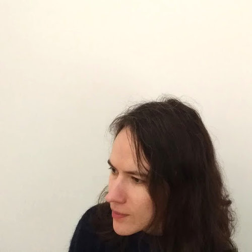

Sviatlana Viarbitskaya
CV
Chercheusse en physique, étudiante en philosophie, [futur] développeusse web et instructeusse contact improvisation

Mon éducation
- 2017-présent: Doctorant à temps partiel en Philosophie, GCAS, Dublin, Irlande.
- 2003-2008: Doctorat en Physique, Université de Stockholm, Suède.
- 1997-2003: Diplome d'Ingénieur, Gomel State Univesity, Biélarussie.
Mon expérience professionnelle
- 2008-2009: Post Doctorante, Université d'Uppsala, Suéde.
- 2011-2013: Post Doctorante, CEMES-CNRS, Toulouse, France.
- 2013-2017: Post Doctorante, Université de Bourgogne-CNRS, Dijon, France.
Mes compétences
- Expérimental:
- Operation and maintenance of femtosecond and CW laser systems
- Spectroscopie optique et microscopie linéaire et non linéaire
- Techniques de comptage de photons uniques
- Microscopie à force atomique
- Microscopie électronique à balayage
- Techniques de nanofabrication
- Théorique:
- Théorie électromagnétique classique de la diffusion de la lumière à partir de petites particules
- Optique non-linéaire de nano et microparticules diélectriques et plasmoniques
- Numérique:
- Analyse et représentation des données: Matlab, Origin
- Calcul et simulation: Comsol, Mathematica
- Programmation scientific: Fortran, Matlab
- Méthode:Calcul par éléments finis des fonctions de Green
- Artistique (visitez mes archives):
- Danse: [contact] improvisation, [modern] jazz, argentianian tango
- Performance de danse-théâtre
- Cinéma: production de courts métrages
- Photographie argentique
- Langages: Russe, Anglais, Francais
Ma formation
- 2018: Développeur Intégrateur Web, 490h, Dijon, France
Mes publications
- Tailoring and imaging the plasmonic local density of states in crystalline nanoprisms,
w/ A. Teulle, R. Marty, J. Sharma, C. Girard, A. Arbouet, E. Dujardin
Nature materials 12 (5), 426, (2013)
- Size dependence of second-harmonic generation at the surface of microspheres,
w/ V. Kapshai, P. van der Meulen, T. Hansson
Physical Review A 81 (5), 053850, (2010)
- Plasmonic hot printing in gold nanoprisms,
w/ A. Cuche, A.Teulle, J. Sharma, C. Girard, A. Arbouet, E.Dujardin
ACS photonics 2 (6), 744-751, (2015)
- Scanning optical microscopy modeling in nanoplasmonics,
w/ R. Marty, A.Arbouet, E. Dujardin, C. Girard, GC. Des Francs
JOSA B 29 (9), 2431-2437, (2012)
- Morphology-induced redistribution of surface plasmon modes in two-dimensional crystalline gold platelets,
w/ A. Teulle, R. Marty, J. Sharma, C. Girard, A. Arbouet, E. Dujardin
Applied Physics Letters 103 (13), 131112, (2013)
- Delocalization of nonlinear optical responses in plasmonic nanoantennas,
w/ O. Demichel, B. Cluzel, GC. des Francs, A. Bouhelier
Physical review letters 115 (19), 197401, (2015)
- A size dependent discontinuous decay rate for the exciton emission in ZnO quantum dots,
w/ T. J. Jacobsson, E. Mukhtar, T. Edvinsson
Physical Chemistry Chemical Physics 16 (27), 13849-13857, (2014)
- From patterned optical near-fields to high symmetry acoustic vibrations in gold crystalline platelets,
w/ J. Fedou, R. Marty, J. Sharma, V. Paillard, E. Dujardin, A. Arbouet
Physical Chemistry Chemical Physics 15 (12), 4205-4213, (2013)
- Dynamics, efficiency, and energy distribution of nonlinear plasmon-assisted generation of hot carriers,
w/ O. Demichel, M. Petit, R. Méjard, F. de Fornel, E. Hertz, F. Billard, A. Bouhelier, B. Cluzel
ACS Photonics 3 (5), 791-795, (2016)
- Luminescence enhancement from silica-coated gold nanoparticle agglomerates following multi-photon excitation,
w/ L. Ryderfors, T. Mikaelsson, E. Mukhtar, L. B-Å Johansson
Journal of fluorescence 21 (1), 257-264, (2011)
- Modal engineering of surface plasmons in apertured au nanoprisms,
w/ A. Cuche,.J. Sharma, .A. Arbouet, C. Girard, .E. Dujardin
Scientific reports 5, 16635, (2015)
- Characterization of CMOS metal based dielectric loaded surface plasmon waveguides at telecom wavelengths,
w/ J.-C. Weeber, J. Arocas, O. Heintz, L. Markey,
Optics express 25 (1), 394-408, (2017)
- Beyond dipolar regime in high-order plasmon mode bowtie antennas,
w/ A. Cuche, U. Kumar, J. Sharma, A. Arbouet, C. Girard, E. Dujardin
Optics Communications 387, 48-54, (2017)
- Designing plasmonic eigenstates for optical signal transmission in planar channel devices,
w/ U. Kumar, A. Cuche, C; Girard, S. Bolisetty, R. Mezzenga, G.C. des Francs, A. Bouhelier, E. Dujardin
ACS Photonics 5 (6), 2328-2335, (2018)
- Correlation between electrical direct current resistivity and plasmonic properties of CMOS compatible titanium nitride thin films,
w/ J. Arocas, O. Heintz, G. Colas-Des-Francs, D; Rusakov, U. Koch, J. Leuthold, La. Markey, A. Dereux, J-C Weeber
Optics express 26 (8), 9813-9821, (2018)